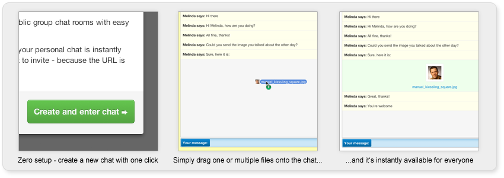

Some weeks ago I started working on a new open source software, called bivouac.
bivouac provides an open source software package which allows to easily setup and run web-based group chats with dead-simple file-sharing (drag a file into the chat, and it’s immediately available as a download for all chat members).

Besides these “feature goals”, my secondary goal is to learn how to architect JavaScript applications that are relatively complex, with domain-driven design and a strong separation of concerns in mind.
bivouac is written in JavaScript, for the Node.js platform. It’s hosted at https://github.com/ManuelKiessling/bivouac
If you would like to be informed on updates to this post, just
Follow @manuelkiessling
 This is the homepage and blog of Manuel Kiessling.
This is the homepage and blog of Manuel Kiessling.